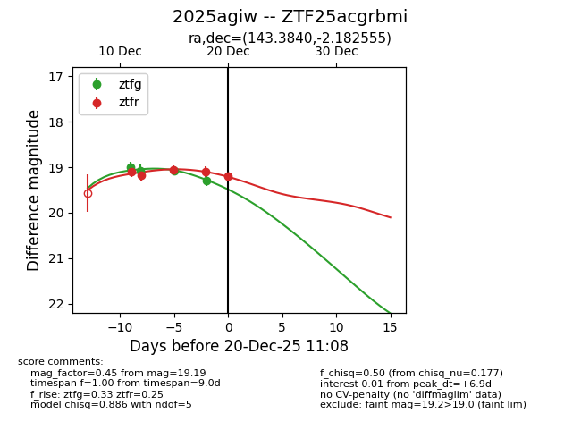
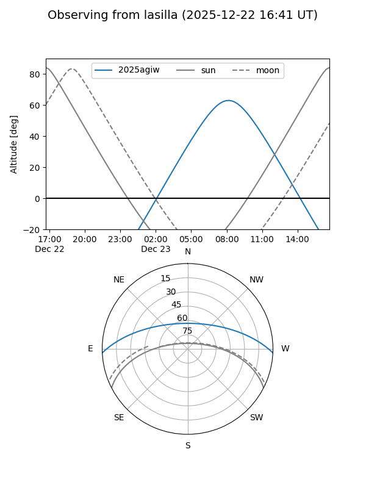
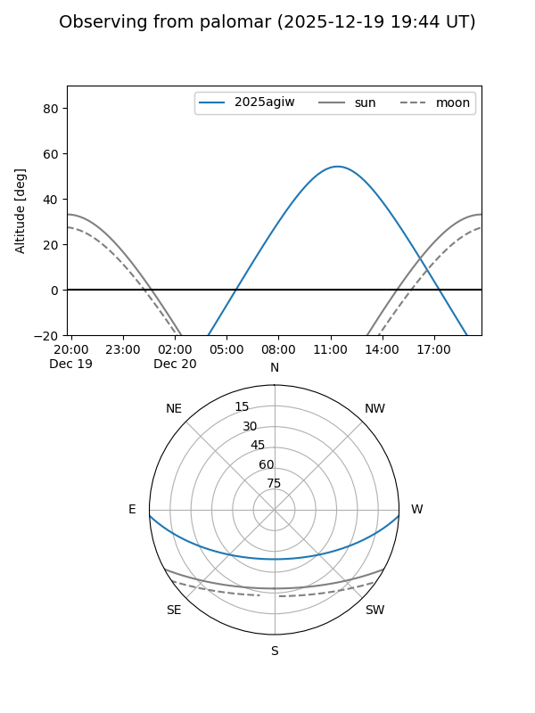

2025agiw
Target 2025agiw at 2025-12-18 11:18
Aliases and brokers:
FINK: fink-portal.org/ZTF25acgrbmi
Lasair: lasair-ztf.lsst.ac.uk/objects/ZTF25acgrbmi
ALeRCE: alerce.online/object/ZTF25acgrbmi
TNS: wis-tns.org/object/2025agiw
YSE: ziggy.ucolick.org/yse/transient_detail/2025agiw
alt names
ZTF25acgrbmi (ztf,fink_ztf)
2025agiw (tns,yse)
Coordinates:
equatorial (ra, dec) = 143.3840,-2.18256
equatorial (HMS+DMS) = 09:33:32.15,-02:10:57.20
galactic (l, b) = (236.4123,+34.09074)
Photometry
last ztfg=19.08, ztfr=19.05
3 ztfg, 3 ztfr detections
Lightcurve

Visibility


Additional plots